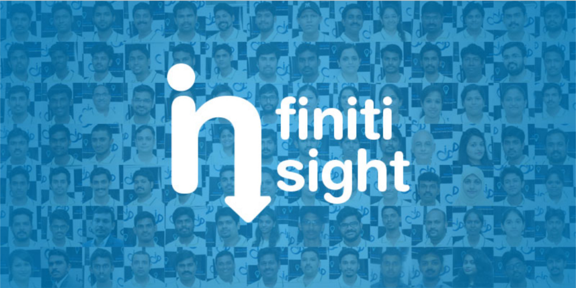

We often hear how important it to behave "professionally" in the workplace. If you want to get ahead, be taken seriously, and have your boss think of you as an asset to the team, doing things in a professional way is vital
But what exactly do employers mean by this term? Surely it's enough to do your job well and show up on time consistently. Or are there other things expected of you if you want to be viewed as being professional?
Your employer may not tell you exactly their own view of what being professional means. But we all know from experience how to get labelled as "unprofessional". By finishing tasks or projects late, for instance. Being unprepared when attending meetings. Spending time gossiping at work.
Other ways to be seen as unprofessional? Treat people with disrespect. Steal their thunder by using their ideas without giving them credit. Say one thing then do the complete opposite. Break promises regularly.
Acting like a professional really means doing what it takes to make others think of you as reliable, respectful, and competent. Depending on where you work and the type of job you have, this can take on many different forms.
There are, however, quite a few common traits when it comes to being professional. This includes the following:
The more you put into practice the 10 points listed above, the better your chances will be to create a positive reputation for yourself. This can ultimately translate into raises and promotions, chances to work on more assignments that you enjoy, less likelihood of being downsized when layoffs are being considered, and the respect of peers and senior management.
The more you put into practice the 10 points listed above, the better your chances will be to create a positive reputation for yourself. This can ultimately translate into raises and promotions, chances to work on more assignments that you enjoy, less likelihood of being downsized when layoffs are being considered, and the respect of peers and senior management.
Trimex Sands is India's top specialty value chain provider for industrial minerals,Founded in 1985. Trimex's global delivery network which delivers products such as Barite, Bentonite, Iron Ore, Feldspar, Bauxite, Ball Clay and Kaolin, among others, to the world's leading Oil Drilling, Ceramic, Glass, Construction, Energy, Steel, and Fertilizer companies.
Client close by Sales Team.
"Infiniti is the perfect place for the freshers to Work & Learn.ln Infiniti lots of opportunities to learn domain, technologies, business, culture, good habits and many more skills.l learned a lot during that past ten years period and still learning.lnfiniti provides me an identity in my family life & society. I would feel like my home.Gained an industry knowledge & business experience while working in Infiniti.Excellent perks and an extremely helpful management.lnfiniti gives me the freedom to decide how you work like to go about the project.Friends (co-workers) & management are helped me a lot and aid when I needed.Thank you so much to all for giving a wonderful time to share my experience in INFINITI."
"- Mr.Senthilnathan
Mrs.Amala Mary
Business Analyst
Inspiration: Mom, Dr.ABJ
Memorable milestone: Winning Infiniti Intrapreneurship
One thing that I learned hard way: Cooking Biriyani
Work-fife balance: Planning my works
The best advice that I got forever: If you think of buying a car, target buying a Flight then you end up buying a car
Work Anniversary :
Infiniti CONGRATULATES him for being a part of the growth story of the company.
Birthdays of the week:
Infiniti wishes them a HAPPY BIRTHDAY
Stay tuned with the next Edition of Infiniti Insight for more updates.....